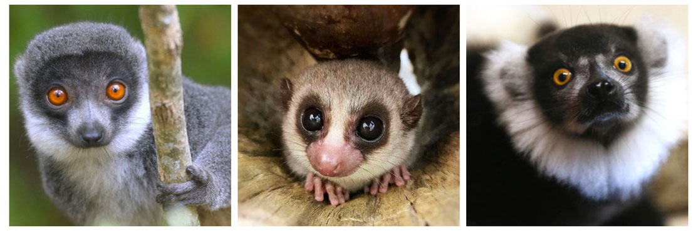
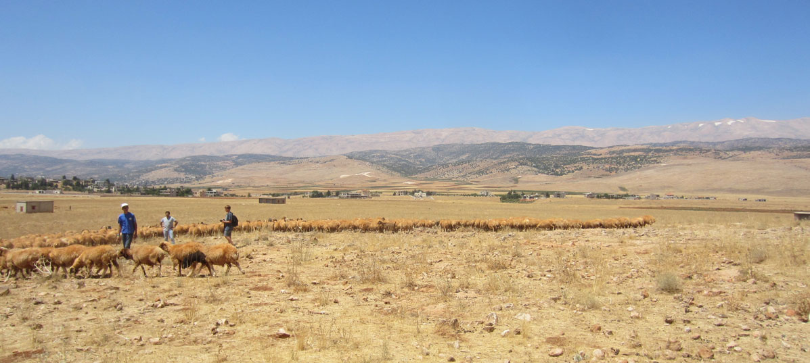

Lentivirus-GLUE: Highlights
These highlights pages aim to provide a brief overview of selected data items contained within the Lentivirus-GLUE project, and to illustrate how it can be used to implement reproducible comparative analyses.
ERVs: Rabbit endogenous lentivirus K (RELIK)
In 2006 we reported an endogenous retrovirus (ERV) lineage derived from a lentivirus in the genome of the European rabbit. We named this ERV 'rabbit endogenous lentivirus K' (RELIK). This discovery enabled us to calibrate - for the first time - the long-term evolutionary timeline of lentiviruses. We applied molecular clock-based calibrations to pairs of segmentally duplicated RELIK insertions, demonstrating that RELIK entered the lagomorph germline at least 6 million years ago.
In spite of its ancient origin, RELIK exhibits many of the features found in present day lentiviruses, such as tat and rev genes for the regulation of viral gene expression.
A startled-looking European hare (Lepus europaeus), photographed in Scotland by Andy Parkinson.
In a follow-up study, we demonstrated the presence of lentivirus insertions in a wide range of lagomorph species, showing that invasion of the lagomorph germline by lentiviruses took place prior to the divergence of rabbits and hares ~12 million year ago. Also, the absence of RELIK insertions from the genome of the American pika (Ochotona princeps) indicates that genome invasion occurred after the divergence of leporids and pikas ~25 million years ago.
Links to related data items:
ERVs: Prosimian immunodeficiency viruses (PSIVs)
The human immunodeficiency viruses HIV-1 and HIV-2 arose through cross-species transmission of lentiviruses from primates to humans. It is well established that these transmission events occurred in West and Central Africa, where lentiviruses are known to circulate among wild apes and monkeys. However, it has generally been assumed that natural lentivirus infections of primates are restricted to the African mainland.
In direct contradiction of this notion, we identified an endogenous lentivirus in the genome of a Malagasy primate - the grey mouse lemur (Microcebus murinus - pictured). Grey mouse lemur prosimian immunodeficiency virus (PSIVgml) was identified by in silico screening of whole genome sequence data, and contains some derived features, such as a vif gene, but lacks certain genes found in simian lentiviruses, such as vpr. PSIVgml is also phylogenetically intermediate, grouping between the feline and simian immunodeficiency viruses in trees.

Lemurs - photographs from Duke Lemur Center.
The discovery of PSIVgml is striking, because all lemurs are restricted to Madagascar - an ancient island that has been colonized by only a small number of mammalian groups since it formed approximately 200 million years ago. This unique biogeographic history is reflected in the astonishing (and sadly endangered) Malagasy primate fauna, consisting of numerous, morphologically diverse lemur species all of which are thought to have descended from a single founder population that first reached Madagascar over 60 million years ago.
In order for lentiviruses to also reach Madagascar, they must either have been present in this founder population of lemurs, or have been introduced via cross-species transmission from a non-primate species that colonised the island at a later date. Since at least one of these scenarios has to be correct, lentiviruses are either (i) more transmissible between species groups, or (ii) far older than has previously been recognised.
As such, it is possible that lentiviral infections afflict, or have afflicted, primate populations throughout the world. Uncharacterised primate lentiviruses might represent a potential source of new human infections, but could also provide valuable new model systems for studying HIV/AIDS.
Links to related data items:
XRVs: Small ruminant lentiviruses
Small ruminant lentiviruses (SRLVs) are retroviruses that infect domestic sheep (Ovis aries) and goats (Capra hircus), causing chronic, persistent infections that ultimately lead to organ failure and death. Two highly divergent SRLV genotypes (named C and E) have been identified in isolated populations of primitive small ruminant breeds.
The Faroe Islands - relict populations of primitive sheep are found in the North-Western periphery of Europe. These primitive breeds, which are reared primarily for meat, are derived from small ruminant populations that spread during the first wave of Neolithic agropastoralism, and in most areas they have been replaced by (or subsumed into) improved stocks specialized for secondary products such as wool and milk.
The occurrence of divergent SRLV genotypes in these remnant populations of primitive small ruminants (C in Norway, E in Sardinia) is consistent with their having spread in association with the diffusion of early agricultural systems during the early Neolithic.
To explore the ecological factors that might have driven the parallel emergence of SRLV-associated disease on three distinct continents, we investigated the emergence of the A and B1 genotypes in depth, focusing on associations with specific places, time periods, and small ruminant breeds.

Our team testing for the presence of SRLVs in sheep and goat populations in Lebanon in 2012. Sampling took place in various regions of the Beqaa valley, where the main agricultural focus lies. Flocks were chosen at random from the Central, West and eastern Beqaa, as well as the northern region of Mount Lebanon. Many of the sampled animals tested positive for SRLVs.
The rapid evolutionary rates that occur in lentiviral genomes facilitate the reconstruction of epidemic history over recent years and decades, in terms of the timing and direction of viral spread. By contrast, over longer periods, the same rapid rates tend to obscure certain aspects of evolutionary history.
Deeper historical processes in lentiviral evolution can be inferred more confidently by linking the contemporary distribution of viral genetic diversity with historical events. SRLV strains appear to be distributed heterogeneously throughout most of the world, and have apparently been influenced by recent international livestock trade Strategic sampling of SRLVs - for example, in small ruminant populations that have historically been insulated from the introduction of new infections - can help reveal the deeper history of the SRLV pandemic.
The SRLV component of Lentivirus-GLUE enables standardized analysis of SRLV sequences across the complete range of viral genotypes and subtypes. It can also support the reproduction and extension of our analysis and testing of our hypotheses regarding historical spread.
Links to related data items:
- Annotated reference sequences for all SRLV genotypes
- Genome length alignments of all SRLV genotypes
- Sequences of 600 distinct isolates
- Verified side data including isolate name, year and country of sampling
- Phylogenetically based genotypes for all isolates
- Reference-constrained alignments for all sequences
XRVs: Equine infectious anemia
Equine infectious anaemia virus (EIAV) is a lentivirus that infects horses worldwide.
Uniquely among known lentiviruses, EIAV can be mechanically transmitted by arthropods (particularly horse flies). EIAV infection is often asymptomatic, but can also manifest as an acute, fulminant disease with high-titre viremia.
In a collaborative investigation of genetic diversity among globally sampled EIAV isolates we found clear evidence of geographic compartmentalization, with distinct strains being predominant in Asia, Europe and the Americas. In addition, our study found evidence that the majority EIAV strain found in the Americas originated approximately 400 years ago - around the time that horses were reintroduced to the New World by European colonists.
Equids became extinct in the Americas ~12,500 years ago, and were not re-introduced until the late 15th Century. Prior to the development of reliable serologic tests in the early 1970s, it was virtually impossible to distinguish inapparent carriers of EIAV from uninfected animals and European colonists likely introduced the disease to the Americas unwittingly.
New World viruses analyzed in the study were sampled in countries throughout the Americas, including sites in Argentina, Canada and the USA. The predominance of a single, distinct EIAV strain suggests that a small number of ancestral 'founder' strains gave rise to the main EIAV epidemic in the New World.
The wild horses of Shackleford Banks.
Importantly, the study included a sample obtained from a horse belonging to the Shackleford Banks wild herd. The Shackleford Banks wild horses occupy an isolated barrier island in North Carolina, USA. They are a unique breed, thought to be descended from animals abandoned by Spanish explorers in the early part of the 16th century, after failed attempts to colonize the Atlantic coastal regions of North America.
Phylogenetic trees placed the EIAV strain found in Shackleford Banks horses in an ancestral position relative to other New World isolates, consistent with EIAV having been introduced by early European colonists.
Links to related data items:
- Annotated reference sequences for all EIAV genotypes
- Genome length alignments of all EIAV genotypes
- Sequences of XXX distinct isolates
- Verified side data including isolate name, year and country of sampling
- Phylogenetically based genotypes for all isolates
- Reference-constrained alignments for all sequences
ERVs: DELV and SpELV: Primitive lentiviruses?
Springhare and Dermopteran viruses.
Related Publications
Gifford RJ
(2012)
Viral evolution in deep time - Lentiviruses and mammals.
Trends in Genetics
[view]
Capomaccio S, Cappelli K, Cook RF, Nardi F, Gifford RJ, Marenzoni ML, and F. Passamonti
(2011)
Geographic structuring of global EIAV isolates: A single origin for New World strains?
Virus Research
[view]
Gilbert C, Maxfield DG, Goodman SM, and Feschotte C.
(2009)
Parallel germline infiltration of a lentivirus in two Malagasy lemurs.
PLoS Genet.
[view]
Gifford RJ, Katzourakis A, Tristem M, Pybus, OG, Winters M, and RW. Shafer.
(2008)
A transitional endogenous lentivirus from the genome of a basal primate and implications for lentivirus evolution.
PNAS
[view]
Katzourakis A, Tristem M, Pybus OG, and RJ. Gifford
(2007)
Discovery and analysis of the first endogenous lentivirus.
PNAS
[view]
Reina R, Mora MI, Glaria I, García I, Solano C, Luján L, Badiola JJ, Contreras A, Berriatua E, Juste R, Mamoun RZ, Rolland M, Amorena B, and de Andrés D.
(2004)
Phylogenetic analysis and reclassification of caprine and ovine lentiviruses based on 104 new isolates: evidence for regular sheep-to-goat transmission and worldwide propagation through livestock trade.
Virology
[abstract]